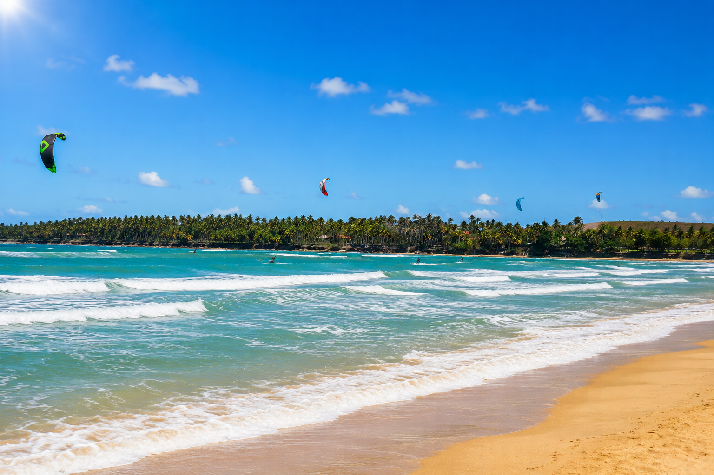
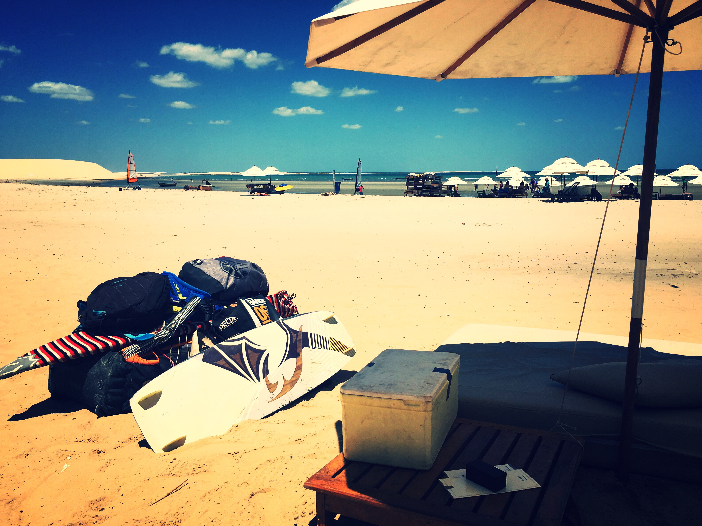

Le confort total
Villa privée
Maison entière avec piscine, plusieurs chambres, espaces extérieurs. Idéale pour groupes, familles, ou ceux qui veulent une vraie intimité. Service à la carte (chef, ménage, transferts).

Un village de pêcheurs entre dunes et lagunes, sur la péninsule de Jericoacoara. Le genre d'endroit où on ne fait pas semblant de respirer.
Préa est un petit village de pêcheurs situé sur la péninsule de Jericoacoara, dans l'État du Ceará, au nord-est du Brésil. Bordé par l'océan Atlantique d'un côté et un labyrinthe de dunes et de lagunes de l'autre, c'est l'un des endroits les plus sauvages et préservés du littoral brésilien.
Les conditions climatiques exceptionnelles — vent constant, eau chaude, soleil 300 jours par an — en font une destination de choix pour les sports nautiques, mais surtout un lieu où le rythme ralentit naturellement. Pas de route bétonnée. Pas de feux rouges. Juste le sable, les chevaux qui passent, et le bruit du vent.
Les alizés soufflent en moyenne 8 mois sur 12 (juillet à février), avec une régularité presque maniaque. C'est ce qui fait de Préa l'un des trois meilleurs spots de kitesurf au monde, mais aussi l'endroit où il fait toujours bon — jamais lourd, jamais étouffant.
Imagine une plage de sable fin qui s'étend sur des kilomètres, sans hôtel-béton, sans parasol-pub, sans chaise longue alignée. À Préa, c'est ce que tu vois en sortant de ta pousada. La densité touristique reste faible, et le village garde une âme.
Au-delà des dunes, des dizaines de lagunes naturelles aux eaux peu profondes et chaudes. Lagune de Préa, lagune Paraíso, lagune Bleue : autant de spots magiques pour se baigner, faire du paddle, ou simplement se poser dans un hamac suspendu au-dessus de l'eau.
Près de l'équateur (2° de latitude sud), Préa bénéficie d'un climat tropical sans grosses chaleurs ni vrai hiver. Eau à 26-28°C en permanence, pas besoin de combinaison. Les températures oscillent toute l'année entre 24 et 32°C en journée.
Selon ton style, ton budget, ton groupe — on adapte. Let's Flow te trouve l'hébergement qui te ressemble, dans le village ou en bord de plage.
Maison entière avec piscine, plusieurs chambres, espaces extérieurs. Idéale pour groupes, familles, ou ceux qui veulent une vraie intimité. Service à la carte (chef, ménage, transferts).
Cabane individuelle ou pour deux, posée à quelques mètres de l'océan. Le rêve simple : ouvrir la porte le matin et avoir directement les pieds dans le sable.
Hébergement boutique au cœur du village ou en lisière de plage. Chambres soignées, petit-déjeuner brésilien, accueil chaleureux. La meilleure façon de ressentir l'esprit du lieu.

Pas de stress, pas d'horaire, pas de tenue à porter. À Préa, on remet le compteur à zéro presque sans s'en rendre compte.
Le climat tropical assure une qualité de séjour toute l'année. Selon ce que tu veux faire, certains mois sont plus indiqués.
Quelques pluies courtes, paysages plus verts, moins de monde. Vent plus doux, idéal pour débuter le kite ou venir pour la déconnexion pure.
CalmeVent constant, ciel dégagé, températures agréables. La meilleure période pour combiner conférence + sport + farniente. Réservation à anticiper.
★ TopVent fort, conditions rêvées pour kiteurs confirmés. Atmosphère plus animée, événements, festivals. C'est la haute saison brésilienne.
★ TopVent encore présent mais plus modéré, températures un peu plus chaudes. Idéal pour qui cherche un mix entre activités et détente.
ÉquilibrePas de visa pour les Français, Belges, Suisses : entrée touristique 90 jours. Passeport valable 6 mois après l'entrée.
Aucun vaccin obligatoire. Vaccin fièvre jaune recommandé si combiné à un séjour Amazonie. Eau en bouteille conseillée.
−4h en été français, −3h en hiver. Aucun jet lag perceptible — on gagne du temps en allant se coucher tôt.
Real brésilien (BRL). Carte bancaire acceptée presque partout, espèces utiles pour le marché et les buggys.
Portugais brésilien. Anglais et français parlés dans les pousadas et écoles de kite. Quelques mots de portugais sont toujours appréciés.
Wi-fi disponible dans tous les hébergements. 4G correcte dans le village. Carte SIM brésilienne facile à acheter à Fortaleza si besoin.
Vol international jusqu'à Fortaleza (Brésil), au départ de Paris avec Air France, TAP Air Portugal ou Latam (escale à Lisbonne, Madrid ou São Paulo). Puis transfert privé en 4×4 jusqu'à Préa, environ 4h30 de route à travers dunes et lagunes.
Climat tropical doux toute l'année. Température entre 24 et 32°C en journée, eau à 26-28°C. La saison sèche et venteuse va de juillet à février — c'est la meilleure période pour venir. Les pluies courtes peuvent intervenir entre mars et juin, mais le climat reste agréable.
Trois formules sont possibles selon le style recherché : villa privée avec piscine pour plus d'intimité, bungalow sur la plage pieds dans le sable, ou chambre dans une pousada de charme au cœur du village. Let's Flow propose un devis personnalisé selon vos préférences.
Non, les ressortissants français, belges et suisses peuvent entrer au Brésil sans visa pour un séjour touristique de 90 jours maximum, sous réserve d'un passeport valable au moins 6 mois après la date d'entrée.
Préa et Jericoacoara sont deux villages voisins sur la même péninsule du Ceará. Jericoacoara est plus connu, plus touristique et animé. Préa est plus tranquille, plus authentique, et offre un cadre plus préservé. Les deux villages partagent les mêmes conditions exceptionnelles de vent, plage et lagunes.
Oui, beaucoup : balades en buggy dans les dunes, visite de la lagune Paraíso, traversée de la dune du Pôr do Sol au coucher du soleil, snorkeling, paddle, yoga, marchés locaux, restaurants au bord de l'eau, et simplement profiter du rythme tranquille du village.
Que ce soit pour une conférence, une retraite, ou simplement pour découvrir un des plus beaux endroits du monde — on est là pour t'accompagner.
Nous contacter →